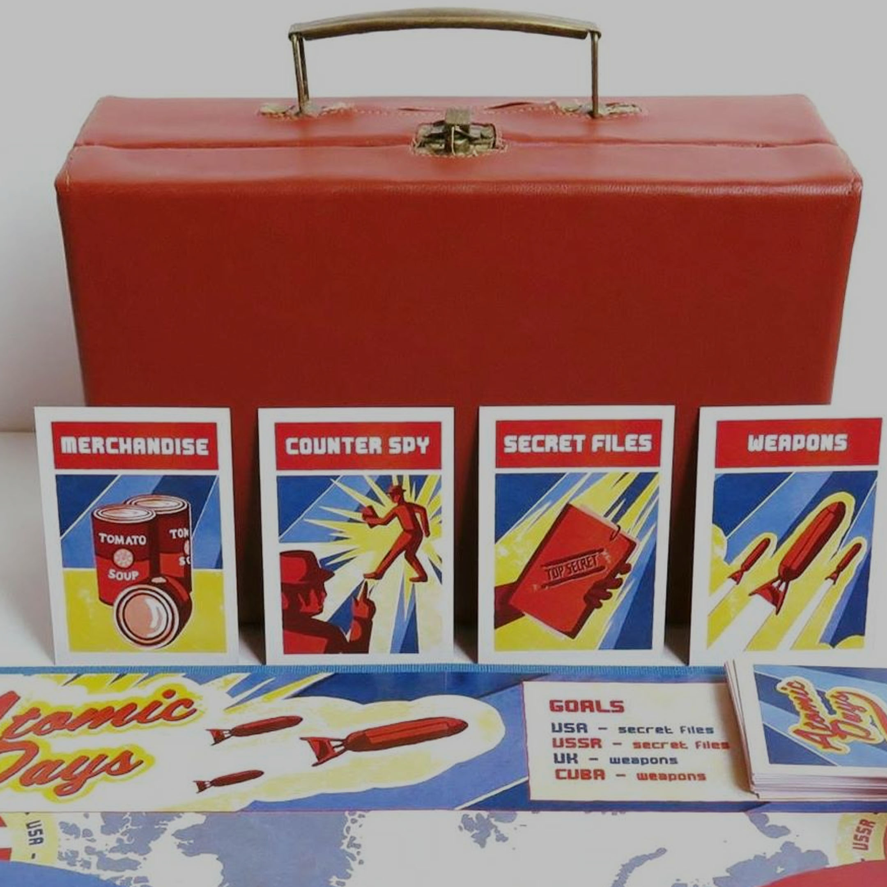
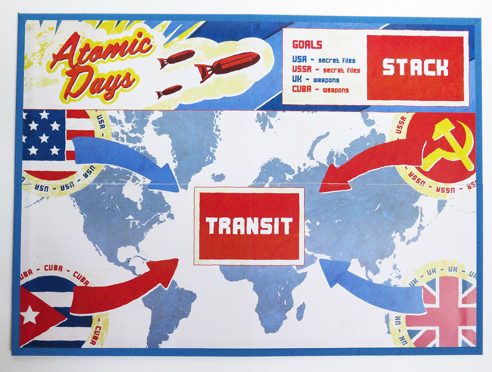
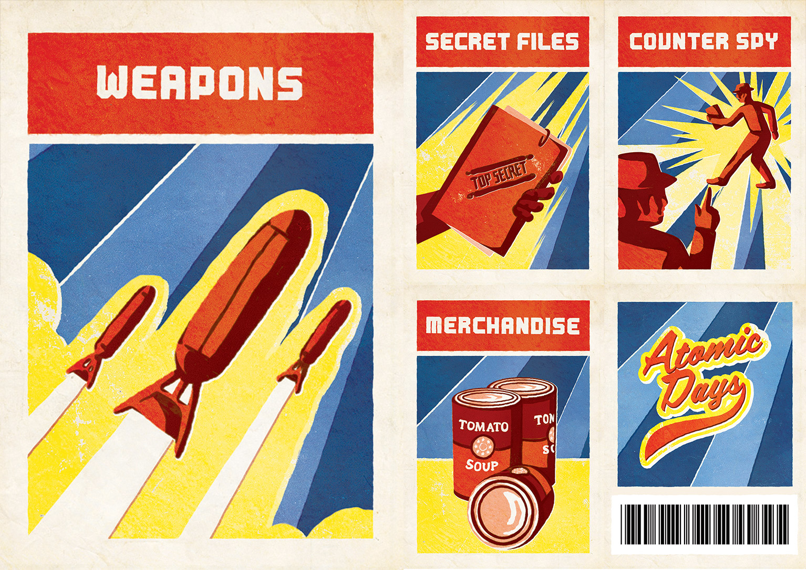
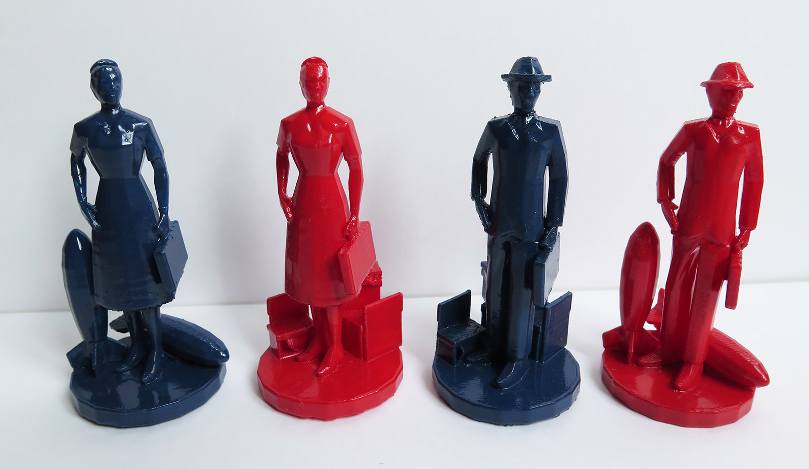

ATOMIC DAYS
Game description
- Title: Atomic Days
- Genre: Smartphone-assisted bluff board game
- Platform: iOS, Android
- Mode: 2v2 Multiplayer
Tools used
- Game Engine: Unity 5
- Code Language: C#
Game History & Concept
Atomic Days is a personal project I started with my wife back at University. It was presented during the Indiecade Europe 2017. Sadly, it hasn't been released commercially yet as we were busy moving in Bordeaux and Berlin. It is a two versus two trading card game where bluff plays a huge part to help your team win. The game is set during the Cold War and has the particularity of including an AI on Atomic Days' companion App that you will have to play with. Genevieve, as she is called can either be a very powerful ally or a terrible adversary. Meet her demands and she will side with you.
Each player plays one of the four countries: USA, USSR, UK or Cuba. The americans are allied with the UK whereas the USSR is allied with Cuba. Each camp has to trade cards with the opposing team being able to intercept the transiting card (secret files, weapons, merchandise or spies). It is on the team that tries to make the card go through to bluff their opponent properly with the help (or not) of Genevieve, the AI.
The goal of the game is pretty simple, try to accumulate enough weapons and/or secret files for your camp and you win. The app is also there to help you track your progress, your opponent's progress and assist you during the different phases of a round thanks to a barcode scanning feature. Each card has a dedicated barcode that helps the App (and Genevieve!) to know exactly what is transiting.
The artistic direction of the project and the art assets were done by the incredible Victoria Wilhelm, a Paris-based artist. They board, the cards, the figures and even the mobile app respect the aspect of the cold-war era games and board game pieces you could find at this period.
 Hopefully, we'll find some time and partners to bring the project to its commercial release at some point. This has been by far my most beloved one. I came up with the concept and the rules and then got help from Esther, my wife, and Victoria to develop the prototype you can see here on the pictures.
Hopefully, we'll find some time and partners to bring the project to its commercial release at some point. This has been by far my most beloved one. I came up with the concept and the rules and then got help from Esther, my wife, and Victoria to develop the prototype you can see here on the pictures.